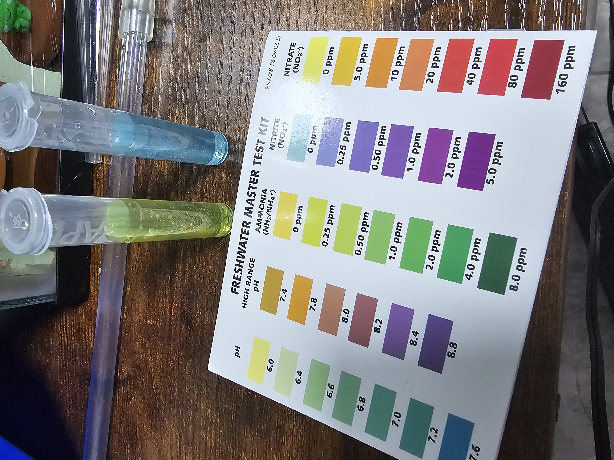
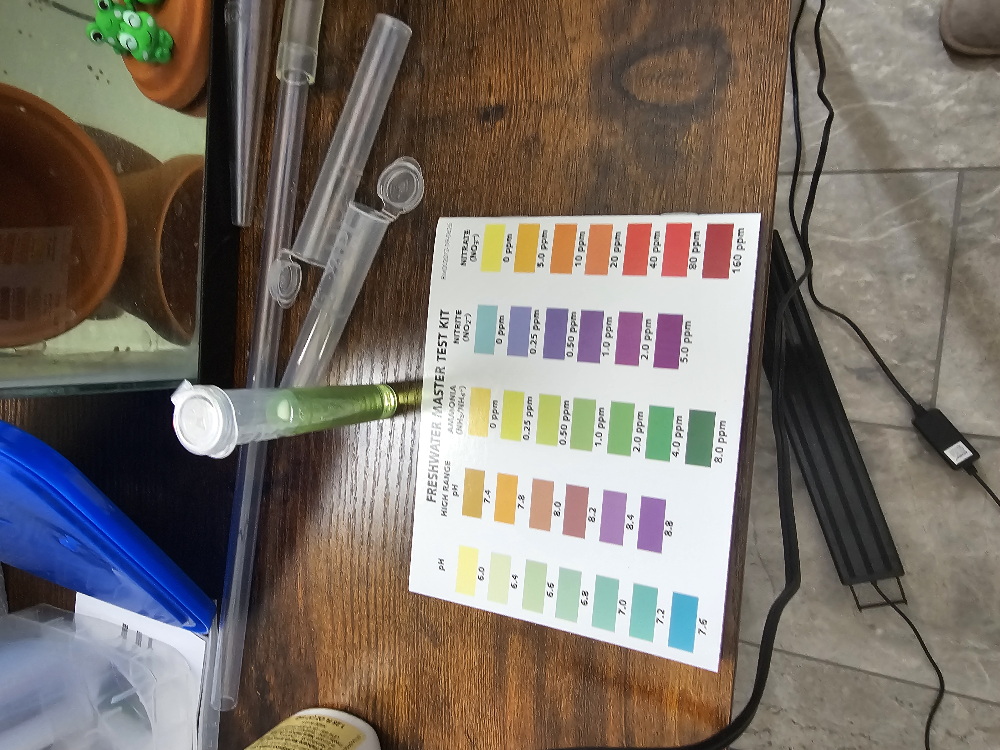
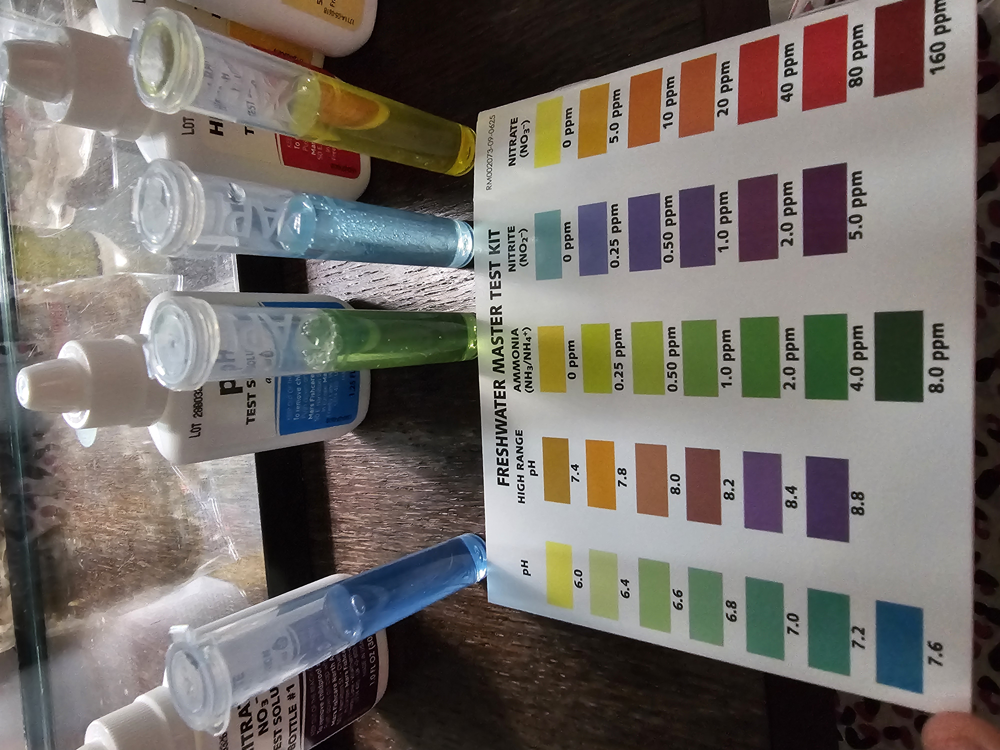

Water Parameters History
Latest Update:
6/28/2026: Got all equipment for tank!
Temperature: +/-0.5 from 76 deg F
pH: Not measured
Ammonia: 0.5 ppm
Nitrite: 0.0 ppm
Nitrate: Not measured


Parameters were very uninteresting until the 28th: 0 in everything
6/16/2026: Just got API Liquid Test Kit!
Temperature: Not measured
pH: 7.4-7.6
Ammonia: 0.25-0.5 ppm
Nitrite: 0.0 ppm
Nitrate: 0.0 ppm
